Every graphic and animation that ran on the bloppdota2 broadcast of the last tournament, scene by scene. Previews below are compressed; the originals are 1920×1080. Transparent overlays are shown on a checkerboard so you can see what is see-through.
Which scenes have an asset today. Rows marked "none" have never existed on this stream.
| Scene / element | Status | Format |
|---|---|---|
| Break screen ("be right back") | exists | 46 s loop, MP4, full screen |
| Scene transition (stinger) | exists | 1.9 s WebM with alpha |
| Draft screen frame | exists | 14 s loop, WebM with alpha |
| In-game overlay | exists | 15 s loop, WebM with alpha |
| Versus screens (one per team) | exists | 8 × 15 s MP4 loops + live web page |
| Teams, groups, bracket, prize pool | exists | live web pages (browser source) |
| Post-game stats (scoreboard, MVP, net worth) | exists | live web page fed by game data |
| Caster desk art + avatars | exists | pixel PNG + animated loop + 4 avatars |
| Team logos | exists | 8 transparent PNGs |
| Twitch / Discord emotes | exists | 8 animated GIFs, 128 px |
| Kiosk / waiting scene | none | was planned, never finished |
| Starting soon / stream ending screen | none | - |
| Caster name plates / lower thirds | none | - |
| Webcam frame | none | - |
Full-screen loop shown between games. Several animated scenes cross-fade into each other, text sits at the bottom.
Plays on every scene switch. The screen is fully covered at the cut point, then clears.
Two narrow waterfall pillars on the left and right edges, on top of the Ability Draft screen. The middle stays transparent so the draft is visible.
Only small decorations in spots the Dota HUD leaves free: thin ledges top left and top right next to the hero bar, "Rumble in the Jungle" logo bottom left, a short balustrade bottom right.
One 15 s animated scene per team: a small figure in the team's theme. On stream, two scenes are combined on a live page that adds rosters, ranks and team names (first image).
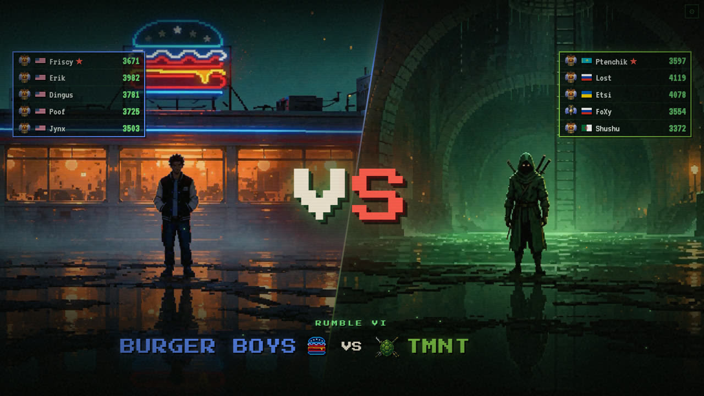
Web pages added as browser sources at 1920×1080. They update themselves from a results sheet while live. Static screenshots from today.
Generated from live game data after each match: scoreboard with drafted abilities and items, MVP reveal, net worth graph, head-to-head. Shown here with demo data; team logo slots are empty in demo mode.
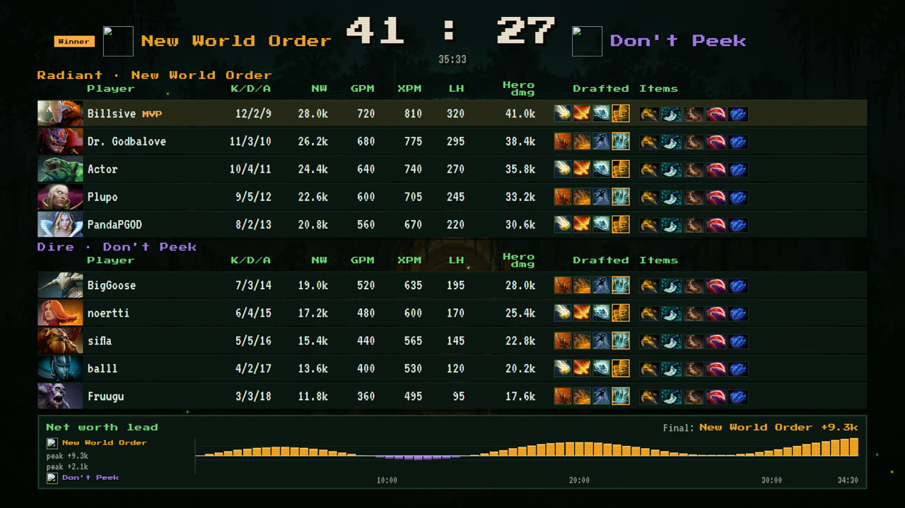
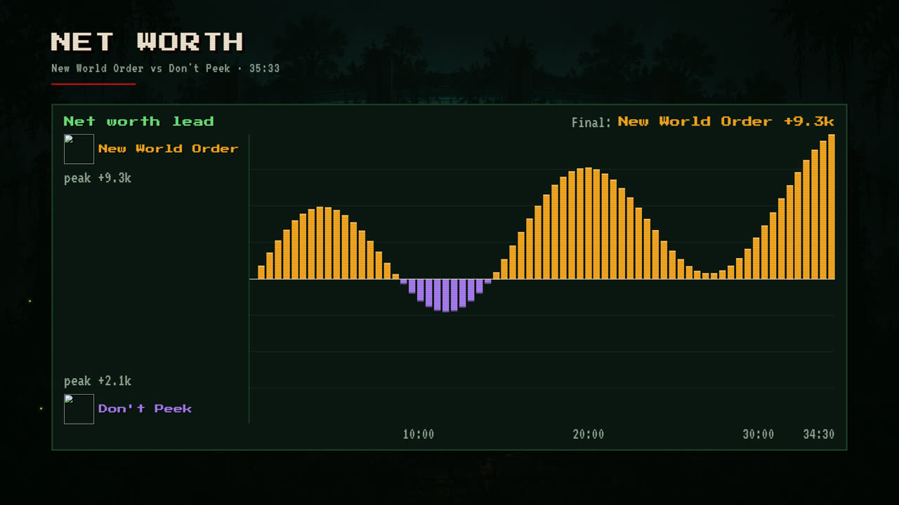
Two casters at a desk, animated 15 s loop (1024×676) plus a static version. Taken over from the World Cup stream, never redrawn for the jungle theme.
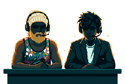
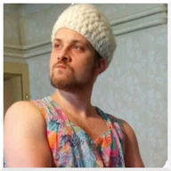
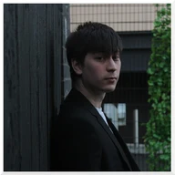
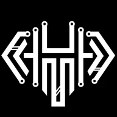
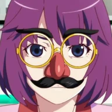
One per team, mixed styles. Transparent PNG, 512 to 1056 px square.
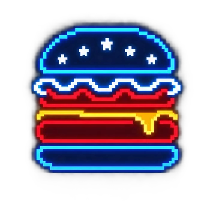
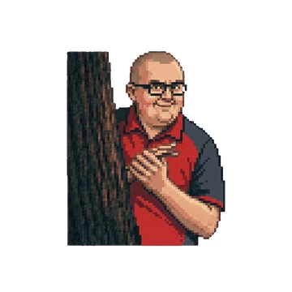
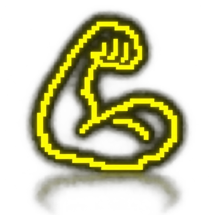
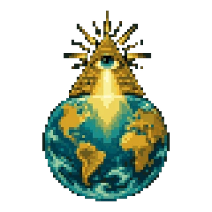
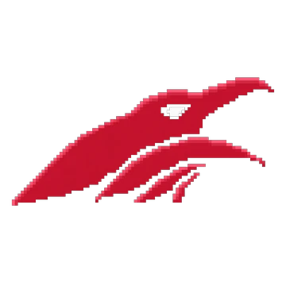
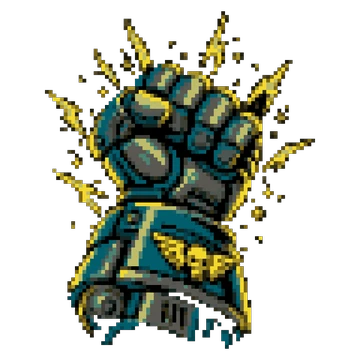
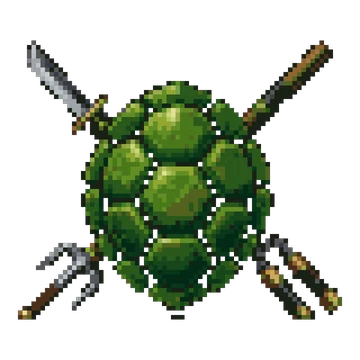
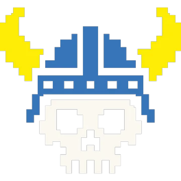
Animated emotes for Twitch and Discord chat, one per team. 128×128 GIF, shown here at 96 px.
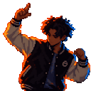
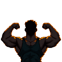
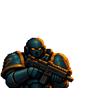
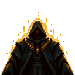
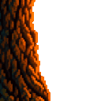
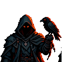
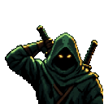
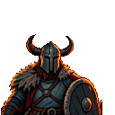
What a new asset needs so it drops straight into the stream.
| Type | Delivery format | Notes |
|---|---|---|
| Full-screen loops | MP4 (H.264), 1920×1080, 30 fps | First and last frame identical so the loop has no visible jump. |
| Overlays with transparency | WebM VP9 with alpha, or MOV ProRes 4444 | Full 1920×1080 canvas, art placed where it should appear. Middle areas over gameplay stay empty. |
| Stinger | WebM VP9 with alpha, ~2 s | Tell us the frame where the screen is fully covered (cut point). |
| Logos / stills | PNG with transparency | At least 1024 px for logos. |
| Emotes | GIF or PNG, 112×112 and 128×128 | Must read at 28 px in chat. |
| Fonts | Press Start 2P, VT323 (Google Fonts) | Used on all pages; please keep text editable or send it as a separate layer. |